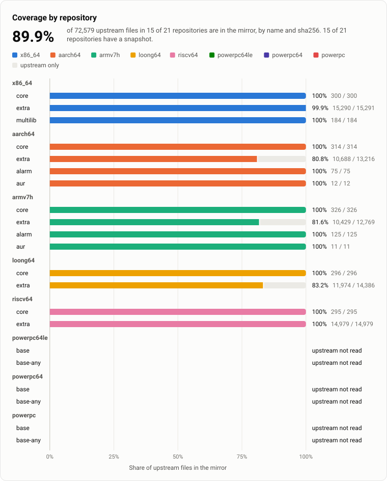
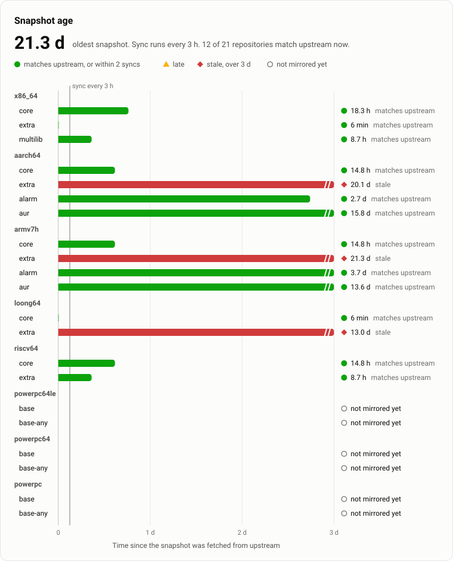
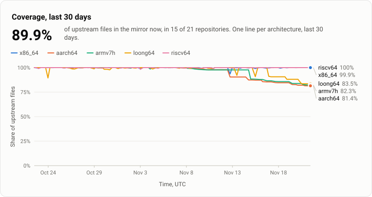
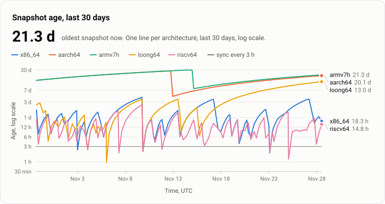
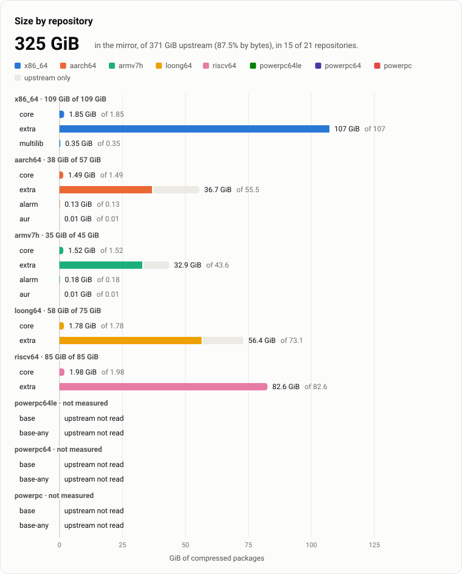
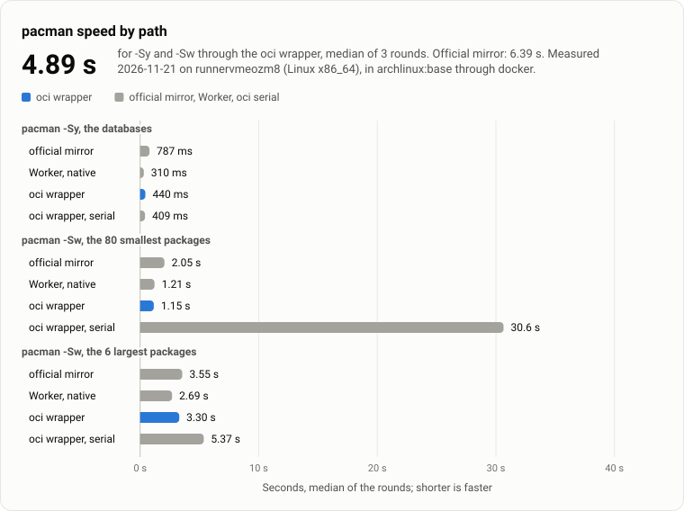

Arch Linux repositories for 8 architectures, mirrored to GitHub Container Registry and served to pacman.
87.4%
of upstream files are in the mirror, counted by file name and sha256 over the 15 of 21 repositories measured in this run. 6 could not be read.
pacman downloads as usual. The Worker answers each request with a redirect to GHCR.
[core]
Server = https://ghcr.mirror.archlinux.pkgforge.dev/$arch/$repo
Include = /etc/pacman.d/mirrorlistpacman reads the registry with client/pacman-oci as its XferCommand.
[options]
XferCommand = /usr/local/bin/pacman-oci %o %u
[core]
Server = oci://ghcr.io/nemo-010/mirror-archlinux/$arch/$repo
Include = /etc/pacman.d/mirrorlist
| repository | in the mirror | upstream | share | missing |
|---|---|---|---|---|
| x86_64-core | 300 | 300 | 100% | 0 |
| x86_64-extra | 15,302 | 15,302 | 100% | 0 |
| x86_64-multilib | 184 | 184 | 100% | 0 |
| aarch64-core | 314 | 314 | 100% | 0 |
| aarch64-extra | 10,184 | 13,235 | 76.9% | 3,051 |
| aarch64-alarm | 75 | 75 | 100% | 0 |
| aarch64-aur | 12 | 12 | 100% | 0 |
| armv7h-core | 326 | 326 | 100% | 0 |
| armv7h-extra | 10,021 | 12,786 | 78.3% | 2,765 |
| armv7h-alarm | 125 | 125 | 100% | 0 |
| armv7h-aur | 11 | 11 | 100% | 0 |
| loong64-core | 296 | 296 | 100% | 0 |
| loong64-extra | 11,102 | 14,394 | 77.1% | 3,292 |
| riscv64-core | 295 | 295 | 100% | 0 |
| riscv64-extra | 15,000 | 15,000 | 100% | 0 |
| powerpc64le-base | - | - | - | - |
| powerpc64le-base-any | - | - | - | - |
| powerpc64-base | - | - | - | - |
| powerpc64-base-any | - | - | - | - |
| powerpc-base | - | - | - | - |
| powerpc-base-any | - | - | - | - |

| repository | state | fetched | synced | age | lag |
|---|---|---|---|---|---|
| x86_64-core | matches upstream | 18.3 h | 0 min | ||
| x86_64-extra | matches upstream | 6 min | 0 min | ||
| x86_64-multilib | matches upstream | 8.7 h | 0 min | ||
| aarch64-core | matches upstream | 14.8 h | 0 min | ||
| aarch64-extra | stale | 20.1 d | 19.7 d | ||
| aarch64-alarm | matches upstream | 2.7 d | 0 min | ||
| aarch64-aur | matches upstream | 15.8 d | 0 min | ||
| armv7h-core | matches upstream | 14.8 h | 0 min | ||
| armv7h-extra | stale | 21.3 d | 21.0 d | ||
| armv7h-alarm | matches upstream | 3.7 d | 0 min | ||
| armv7h-aur | matches upstream | 13.6 d | 0 min | ||
| loong64-core | matches upstream | 6 min | 0 min | ||
| loong64-extra | stale | 13.0 d | 13.1 d | ||
| riscv64-core | matches upstream | 14.8 h | 0 min | ||
| riscv64-extra | matches upstream | 8.7 h | 0 min | ||
| powerpc64le-base | not mirrored yet | - | - | - | - |
| powerpc64le-base-any | not mirrored yet | - | - | - | - |
| powerpc64-base | not mirrored yet | - | - | - | - |
| powerpc64-base-any | not mirrored yet | - | - | - | - |
| powerpc-base | not mirrored yet | - | - | - | - |
| powerpc-base-any | not mirrored yet | - | - | - | - |

| architecture | first point | coverage then | coverage now | largest age | points |
|---|---|---|---|---|---|
| x86_64 | 99.5% | 100% | 4.3 d | 320 | |
| aarch64 | 99.8% | 77.6% | 28.3 d | 320 | |
| armv7h | 99.8% | 79.1% | 30.5 d | 320 | |
| loong64 | 99.6% | 77.5% | 13.0 d | 320 | |
| riscv64 | 99.9% | 100% | 2.5 d | 320 | |
| powerpc64le | - | - | - | 320 | |
| powerpc64 | - | - | - | 320 | |
| powerpc | - | - | - | 320 |

| architecture | first point | coverage then | coverage now | largest age | points |
|---|---|---|---|---|---|
| x86_64 | 99.5% | 100% | 4.3 d | 320 | |
| aarch64 | 99.8% | 77.6% | 28.3 d | 320 | |
| armv7h | 99.8% | 79.1% | 30.5 d | 320 | |
| loong64 | 99.6% | 77.5% | 13.0 d | 320 | |
| riscv64 | 99.9% | 100% | 2.5 d | 320 | |
| powerpc64le | - | - | - | 320 | |
| powerpc64 | - | - | - | 320 | |
| powerpc | - | - | - | 320 |

| repository | GiB in the mirror | GiB upstream | share |
|---|---|---|---|
| x86_64-core | 1.87 | 1.87 | 100% |
| x86_64-extra | 104 | 104 | 100% |
| x86_64-multilib | 0.35 | 0.35 | 100% |
| aarch64-core | 1.49 | 1.49 | 100% |
| aarch64-extra | 32.9 | 55.8 | 58.8% |
| aarch64-alarm | 0.13 | 0.13 | 100% |
| aarch64-aur | 0.01 | 0.01 | 100% |
| armv7h-core | 1.53 | 1.53 | 100% |
| armv7h-extra | 30.6 | 43.7 | 69.9% |
| armv7h-alarm | 0.18 | 0.18 | 100% |
| armv7h-aur | 0.01 | 0.01 | 100% |
| loong64-core | 1.79 | 1.79 | 100% |
| loong64-extra | 50.4 | 73.2 | 68.8% |
| riscv64-core | 2.00 | 2.00 | 100% |
| riscv64-extra | 82.8 | 82.8 | 100% |
| powerpc64le-base | - | - | - |
| powerpc64le-base-any | - | - | - |
| powerpc64-base | - | - | - |
| powerpc64-base-any | - | - | - |
| powerpc-base | - | - | - |
| powerpc-base-any | - | - | - |

| operation | path | median | rounds | files | MiB |
|---|---|---|---|---|---|
| sy | official mirror | 375 ms | 374 ms, 376 ms, 375 ms | 1 | 0.1 |
| sy | Worker, native | 135 ms | 274 ms, 129 ms, 135 ms | 1 | 0.1 |
| sy | oci wrapper | 192 ms | 213 ms, 192 ms, 186 ms | 1 | 0.1 |
| sy | oci wrapper, serial | 176 ms | 176 ms, 193 ms, 162 ms | 1 | 0.1 |
| sw-small | official mirror | 1.86 s | 1.93 s, 1.84 s, 1.86 s | 80 | 0.6 |
| sw-small | Worker, native | 729 ms | 2.27 s, 729 ms, 688 ms | 80 | 0.6 |
| sw-small | oci wrapper | 698 ms | 683 ms, 707 ms, 698 ms | 80 | 0.6 |
| sw-small | oci wrapper, serial | 14.0 s | 14.0 s, 14.9 s, 13.8 s | 80 | 0.6 |
| sw-large | official mirror | 3.40 s | 3.16 s, 3.40 s, 3.92 s | 6 | 501.0 |
| sw-large | Worker, native | 2.03 s | 3.07 s, 2.03 s, 1.62 s | 6 | 501.0 |
| sw-large | oci wrapper | 2.47 s | 2.47 s, 2.54 s, 2.33 s | 6 | 501.0 |
| sw-large | oci wrapper, serial | 3.53 s | 3.52 s, 3.53 s, 3.54 s | 6 | 501.0 |
Mirror counts the files that the database of each latest snapshot names. A repository with no snapshot holds 0. Upstream counts the files of upstream's database in this run. The size chart counts only the upstream files that the mirror holds.
A sum counts only the repositories read on that side: upstream in 15 of 21. A cell with - was not read.
| repository | mirror GiB | mirror files | upstream GiB | upstream files |
|---|---|---|---|---|
| x86_64 | 106 | 15,786 | 106 | 15,786 |
| core | 1.87 | 300 | 1.87 | 300 |
| extra | 104 | 15,302 | 104 | 15,302 |
| multilib | 0.35 | 184 | 0.35 | 184 |
| aarch64 | 56.1 | 13,570 | 57.5 | 13,636 |
| core | 1.49 | 314 | 1.49 | 314 |
| extra | 54.5 | 13,169 | 55.8 | 13,235 |
| alarm | 0.13 | 75 | 0.13 | 75 |
| aur | 0.01 | 12 | 0.01 | 12 |
| armv7h | 44.8 | 13,169 | 45.5 | 13,248 |
| core | 1.53 | 326 | 1.53 | 326 |
| extra | 43.1 | 12,707 | 43.7 | 12,786 |
| alarm | 0.18 | 125 | 0.18 | 125 |
| aur | 0.01 | 11 | 0.01 | 11 |
| loong64 | 76.0 | 14,642 | 75.0 | 14,690 |
| core | 1.79 | 296 | 1.79 | 296 |
| extra | 74.2 | 14,346 | 73.2 | 14,394 |
| riscv64 | 84.8 | 15,295 | 84.8 | 15,295 |
| core | 2.00 | 295 | 2.00 | 295 |
| extra | 82.8 | 15,000 | 82.8 | 15,000 |
| powerpc64le | 0 | 0 | - | - |
| base | 0 | 0 | - | - |
| base-any | 0 | 0 | - | - |
| powerpc64 | 0 | 0 | - | - |
| base | 0 | 0 | - | - |
| base-any | 0 | 0 | - | - |
| powerpc | 0 | 0 | - | - |
| base | 0 | 0 | - | - |
| base-any | 0 | 0 | - | - |
| all architectures | 368 | 72,462 | 369 | 72,655 |
| repository | state | coverage | files | upstream | missing | GiB | age | synced | lag | fetched | upstream server | Worker | badge |
|---|---|---|---|---|---|---|---|---|---|---|---|---|---|
x86_64-core | ok | 100% | 300 | 300 | 0 | 1.87 | 18.3 h | 18 h ago | 0 min | https://geo.mirror.pkgbuild.com/core/os/x86_64 | db 302, package 302 | ||
x86_64-extra | ok | 100% | 15,302 | 15,302 | 0 | 104 | 6 min | 4 min ago | 0 min | https://geo.mirror.pkgbuild.com/extra/os/x86_64 | db 302, package 302 | ||
x86_64-multilib | ok | 100% | 184 | 184 | 0 | 0.35 | 8.7 h | 8 h ago | 0 min | https://geo.mirror.pkgbuild.com/multilib/os/x86_64 | db 302, package 302 | ||
aarch64-core | ok | 100% | 314 | 314 | 0 | 1.49 | 14.8 h | 14 h ago | 0 min | https://fl.us.mirror.archlinuxarm.org/aarch64/core | db 302, package 302 | ||
aarch64-extra | stale | 76.9% | 10,184 | 13,235 | 3,051389-ds-base-3.3.1-2-aarch64.pkg.tar.xz, 7zip-26.06-1-aarch64.pkg.tar.xz, abuild-3.18.0-2-aarch64.pkg.tar.xz, accerciser-3.48.0-5-any.pkg.tar.xz, acme-redirect-0.8.2-1-aarch64.pkg.tar.xz, acme.sh-3.1.7-1-any.pkg.tar.xz, act-0.2.98-1-aarch64.pkg.tar.xz, ada-4.1.1-1-aarch64.pkg.tar.xz, adbtop-0.2.0-1-aarch64.pkg.tar.xz, adguardhome-1:1.0.0-2-aarch64.pkg.tar.xz, afl++-5.03c-1-aarch64.pkg.tar.xz, afl-utils-1.35a-5-any.pkg.tar.xz, age-plugin-tpm-1.0.1-3-aarch64.pkg.tar.xz, aircrack-ng-1.7-8-aarch64.pkg.tar.xz, algernon-1.18.0-1-aarch64.pkg.tar.xz, algol68g-3.14.0-1-aarch64.pkg.tar.xz, algol68g-doc-3.14.0-1-aarch64.pkg.tar.xz, aliyun-cli-3.5.3-2-aarch64.pkg.tar.xz, alpm-docs-0.14.0-1-any.pkg.tar.xz, alsa-card-profiles-1:1.6.12-1-aarch64.pkg.tar.xz, and 3,031 more | 55.8 | 20.1 d | 20 d ago | 19.7 d | https://fl.us.mirror.archlinuxarm.org/aarch64/extra | db 302, package 302 | ||
aarch64-alarm | ok | 100% | 75 | 75 | 0 | 0.13 | 2.7 d | 2 d ago | 0 min | https://fl.us.mirror.archlinuxarm.org/aarch64/alarm | db 302, package 302 | ||
aarch64-aur | ok | 100% | 12 | 12 | 0 | 0.01 | 15.8 d | 15 d ago | 0 min | https://fl.us.mirror.archlinuxarm.org/aarch64/aur | db 302, package 302 | ||
armv7h-core | ok | 100% | 326 | 326 | 0 | 1.53 | 14.8 h | 14 h ago | 0 min | https://fl.us.mirror.archlinuxarm.org/armv7h/core | db 302, package 302 | ||
armv7h-extra | stale | 78.3% | 10,021 | 12,786 | 2,7654ti2-1.6.16-1-armv7h.pkg.tar.xz, 7zip-26.06-1-armv7h.pkg.tar.xz, abuild-3.18.0-2-armv7h.pkg.tar.xz, accerciser-3.48.0-4-any.pkg.tar.xz, acme-redirect-0.8.2-1-armv7h.pkg.tar.xz, acme.sh-3.1.7-1-any.pkg.tar.xz, act-0.2.98-1-armv7h.pkg.tar.xz, ada-4.1.1-1-armv7h.pkg.tar.xz, adguardhome-1:1.0.0-2-armv7h.pkg.tar.xz, afl++-5.03c-1-armv7h.pkg.tar.xz, afl-utils-1.35a-5-any.pkg.tar.xz, age-plugin-tpm-1.0.1-3-armv7h.pkg.tar.xz, aircrack-ng-1.7-8-armv7h.pkg.tar.xz, algernon-1.18.0-1-armv7h.pkg.tar.xz, algol68g-3.14.0-1-armv7h.pkg.tar.xz, algol68g-doc-3.14.0-1-armv7h.pkg.tar.xz, aliyun-cli-3.5.3-2-armv7h.pkg.tar.xz, alpm-docs-0.14.0-1-any.pkg.tar.xz, alsa-card-profiles-1:1.6.12-1-armv7h.pkg.tar.xz, alsa-scarlett-gui-0.5.1-3-armv7h.pkg.tar.xz, and 2,745 more | 43.7 | 21.3 d | 21 d ago | 21.0 d | https://fl.us.mirror.archlinuxarm.org/armv7h/extra | db 302, package 302 | ||
armv7h-alarm | ok | 100% | 125 | 125 | 0 | 0.18 | 3.7 d | 3 d ago | 0 min | https://fl.us.mirror.archlinuxarm.org/armv7h/alarm | db 302, package 302 | ||
armv7h-aur | ok | 100% | 11 | 11 | 0 | 0.01 | 13.6 d | 13 d ago | 0 min | https://fl.us.mirror.archlinuxarm.org/armv7h/aur | db 302, package 302 | ||
loong64-core | ok | 100% | 296 | 296 | 0 | 1.79 | 6 min | 4 min ago | 0 min | https://loongarchlinux.lcpu.dev/loongarch/archlinux/core/os/loong64 | db 302, package 302 | ||
loong64-extra | stale | 77.1% | 11,102 | 14,394 | 3,2920ad-0.28.0-3-loong64.pkg.tar.zst, abuild-3.18.0-2-loong64.pkg.tar.zst, accerciser-3.48.0-4-any.pkg.tar.zst, acme-redirect-0.8.2-1-loong64.pkg.tar.zst, acme.sh-3.1.7-1-any.pkg.tar.zst, acpi_call-1.2.2-402-loong64.pkg.tar.zst, acpi_call-lts-1.2.2-382-loong64.pkg.tar.zst, act-0.2.98-1-loong64.pkg.tar.zst, ada-4.1.1-1-loong64.pkg.tar.zst, adbtop-0.2.0-1-loong64.pkg.tar.zst, adguardhome-1:1.0.0-2-loong64.pkg.tar.zst, aegisub-3.5.1-1-loong64.pkg.tar.zst, agda-2.8.0.2-37-loong64.pkg.tar.zst, agda-stdlib-2.4.1-1-loong64.pkg.tar.zst, algernon-1.18.0-1-loong64.pkg.tar.zst, algol68g-3.14.0-1-loong64.pkg.tar.zst, algol68g-doc-3.14.0-1-loong64.pkg.tar.zst, allure-0.11.0.0-428-loong64.pkg.tar.zst, alpm-docs-0.14.0-1-any.pkg.tar.zst, alsa-card-profiles-1:1.6.12-1-loong64.pkg.tar.zst, and 3,272 more | 73.2 | 13.0 d | 12 d ago | 13.1 d | https://loongarchlinux.lcpu.dev/loongarch/archlinux/extra/os/loong64 | db 302, package 302 | ||
riscv64-core | ok | 100% | 295 | 295 | 0 | 2.00 | 14.8 h | 14 h ago | 0 min | https://riscv.mirror.pkgbuild.com/repo/core | db 302, package 302 | ||
riscv64-extra | ok | 100% | 15,000 | 15,000 | 0 | 82.8 | 8.7 h | 8 h ago | 0 min | https://riscv.mirror.pkgbuild.com/repo/extra | db 302, package 302 | ||
powerpc64le-base | not mirrored yet | - | - | - | - | - | - | - | - | - | no db_server answered 200 for base.db | db 302 failed | |
powerpc64le-base-any | not mirrored yet | - | - | - | - | - | - | - | - | - | no db_server answered 200 for base-any.db | db 302 failed | |
powerpc64-base | not mirrored yet | - | - | - | - | - | - | - | - | - | no db_server answered 200 for base.db | db 302 failed | |
powerpc64-base-any | not mirrored yet | - | - | - | - | - | - | - | - | - | no db_server answered 200 for base-any.db | db 302 failed | |
powerpc-base | not mirrored yet | - | - | - | - | - | - | - | - | - | no db_server answered 200 for base.db | db 302 failed | |
powerpc-base-any | not mirrored yet | - | - | - | - | - | - | - | - | - | no db_server answered 200 for base-any.db | db 302 failed |
Each probe is one GET with no redirect followed. A repository with a snapshot must answer 302 to https://*.githubusercontent.com. A repository with no snapshot must answer 404. Failed probes in 2 runs in a row, over 50 minutes or more, open the worker-down issue.
| repository | probe | URL | HTTP | expected | time | redirect to | result |
|---|---|---|---|---|---|---|---|
| x86_64-core | db | https://ghcr.mirror.archlinux.pkgforge.dev/x86_64/core/core.db | 302 | 302 | 313 ms | pkg-containers.githubusercontent.com | ok |
| x86_64-core | package | https://ghcr.mirror.archlinux.pkgforge.dev/x86_64/core/acl-2.4.0-1-x86_64.pkg.tar.zst | 302 | 302 | 303 ms | pkg-containers.githubusercontent.com | ok |
| x86_64-extra | db | https://ghcr.mirror.archlinux.pkgforge.dev/x86_64/extra/extra.db | 302 | 302 | 287 ms | pkg-containers.githubusercontent.com | ok |
| x86_64-extra | package | https://ghcr.mirror.archlinux.pkgforge.dev/x86_64/extra/0ad-0.28.0-3-x86_64.pkg.tar.zst | 302 | 302 | 273 ms | pkg-containers.githubusercontent.com | ok |
| x86_64-multilib | db | https://ghcr.mirror.archlinux.pkgforge.dev/x86_64/multilib/multilib.db | 302 | 302 | 289 ms | pkg-containers.githubusercontent.com | ok |
| x86_64-multilib | package | https://ghcr.mirror.archlinux.pkgforge.dev/x86_64/multilib/cmucl-21e-1-x86_64.pkg.tar.zst | 302 | 302 | 273 ms | pkg-containers.githubusercontent.com | ok |
| aarch64-core | db | https://ghcr.mirror.archlinux.pkgforge.dev/aarch64/core/core.db | 302 | 302 | 410 ms | pkg-containers.githubusercontent.com | ok |
| aarch64-core | package | https://ghcr.mirror.archlinux.pkgforge.dev/aarch64/core/acl-2.4.0-1-aarch64.pkg.tar.xz | 302 | 302 | 351 ms | pkg-containers.githubusercontent.com | ok |
| aarch64-extra | db | https://ghcr.mirror.archlinux.pkgforge.dev/aarch64/extra/extra.db | 302 | 302 | 309 ms | pkg-containers.githubusercontent.com | ok |
| aarch64-extra | package | https://ghcr.mirror.archlinux.pkgforge.dev/aarch64/extra/389-ds-base-3.3.1-1-aarch64.pkg.tar.xz | 302 | 302 | 315 ms | pkg-containers.githubusercontent.com | ok |
| aarch64-alarm | db | https://ghcr.mirror.archlinux.pkgforge.dev/aarch64/alarm/alarm.db | 302 | 302 | 465 ms | pkg-containers.githubusercontent.com | ok |
| aarch64-alarm | package | https://ghcr.mirror.archlinux.pkgforge.dev/aarch64/alarm/aml-libs-c2-r9.296f39b-1-aarch64.pkg.tar.xz | 302 | 302 | 301 ms | pkg-containers.githubusercontent.com | ok |
| aarch64-aur | db | https://ghcr.mirror.archlinux.pkgforge.dev/aarch64/aur/aur.db | 302 | 302 | 433 ms | pkg-containers.githubusercontent.com | ok |
| aarch64-aur | package | https://ghcr.mirror.archlinux.pkgforge.dev/aarch64/aur/autojump-rs-git-0.5.1.r14.g65abf11-4-any.pkg.tar.xz | 302 | 302 | 405 ms | pkg-containers.githubusercontent.com | ok |
| armv7h-core | db | https://ghcr.mirror.archlinux.pkgforge.dev/armv7h/core/core.db | 302 | 302 | 387 ms | pkg-containers.githubusercontent.com | ok |
| armv7h-core | package | https://ghcr.mirror.archlinux.pkgforge.dev/armv7h/core/acl-2.4.0-1-armv7h.pkg.tar.xz | 302 | 302 | 327 ms | pkg-containers.githubusercontent.com | ok |
| armv7h-extra | db | https://ghcr.mirror.archlinux.pkgforge.dev/armv7h/extra/extra.db | 302 | 302 | 302 ms | pkg-containers.githubusercontent.com | ok |
| armv7h-extra | package | https://ghcr.mirror.archlinux.pkgforge.dev/armv7h/extra/389-ds-base-2.4.1-2-armv7h.pkg.tar.xz | 302 | 302 | 278 ms | pkg-containers.githubusercontent.com | ok |
| armv7h-alarm | db | https://ghcr.mirror.archlinux.pkgforge.dev/armv7h/alarm/alarm.db | 302 | 302 | 302 ms | pkg-containers.githubusercontent.com | ok |
| armv7h-alarm | package | https://ghcr.mirror.archlinux.pkgforge.dev/armv7h/alarm/aml-libs-c1-r11.820b12a-5-armv7h.pkg.tar.xz | 302 | 302 | 345 ms | pkg-containers.githubusercontent.com | ok |
| armv7h-aur | db | https://ghcr.mirror.archlinux.pkgforge.dev/armv7h/aur/aur.db | 302 | 302 | 349 ms | pkg-containers.githubusercontent.com | ok |
| armv7h-aur | package | https://ghcr.mirror.archlinux.pkgforge.dev/armv7h/aur/arm-mem-git-39.b48ea15-1-armv7h.pkg.tar.xz | 302 | 302 | 307 ms | pkg-containers.githubusercontent.com | ok |
| loong64-core | db | https://ghcr.mirror.archlinux.pkgforge.dev/loong64/core/core.db | 302 | 302 | 291 ms | pkg-containers.githubusercontent.com | ok |
| loong64-core | package | https://ghcr.mirror.archlinux.pkgforge.dev/loong64/core/acl-2.4.0-1-loong64.pkg.tar.zst | 302 | 302 | 286 ms | pkg-containers.githubusercontent.com | ok |
| loong64-extra | db | https://ghcr.mirror.archlinux.pkgforge.dev/loong64/extra/extra.db | 302 | 302 | 268 ms | pkg-containers.githubusercontent.com | ok |
| loong64-extra | package | https://ghcr.mirror.archlinux.pkgforge.dev/loong64/extra/0ad-data-0.28.0-1-any.pkg.tar.zst | 302 | 302 | 298 ms | pkg-containers.githubusercontent.com | ok |
| riscv64-core | db | https://ghcr.mirror.archlinux.pkgforge.dev/riscv64/core/core.db | 302 | 302 | 304 ms | pkg-containers.githubusercontent.com | ok |
| riscv64-core | package | https://ghcr.mirror.archlinux.pkgforge.dev/riscv64/core/acl-2.4.0-1-riscv64.pkg.tar.zst | 302 | 302 | 284 ms | pkg-containers.githubusercontent.com | ok |
| riscv64-extra | db | https://ghcr.mirror.archlinux.pkgforge.dev/riscv64/extra/extra.db | 302 | 302 | 345 ms | pkg-containers.githubusercontent.com | ok |
| riscv64-extra | package | https://ghcr.mirror.archlinux.pkgforge.dev/riscv64/extra/0ad-0.28.0-3-riscv64.pkg.tar.zst | 302 | 302 | 309 ms | pkg-containers.githubusercontent.com | ok |
| powerpc64le-base | db | https://ghcr.mirror.archlinux.pkgforge.dev/powerpc64le/base/base.db | 302 | 404 | 345 ms | pkg-containers.githubusercontent.com | HTTP 302, expected 404 |
| powerpc64le-base-any | db | https://ghcr.mirror.archlinux.pkgforge.dev/powerpc64le/base-any/base-any.db | 302 | 404 | 271 ms | pkg-containers.githubusercontent.com | HTTP 302, expected 404 |
| powerpc64-base | db | https://ghcr.mirror.archlinux.pkgforge.dev/powerpc64/base/base.db | 302 | 404 | 381 ms | pkg-containers.githubusercontent.com | HTTP 302, expected 404 |
| powerpc64-base-any | db | https://ghcr.mirror.archlinux.pkgforge.dev/powerpc64/base-any/base-any.db | 302 | 404 | 277 ms | pkg-containers.githubusercontent.com | HTTP 302, expected 404 |
| powerpc-base | db | https://ghcr.mirror.archlinux.pkgforge.dev/powerpc/base/base.db | 302 | 404 | 316 ms | pkg-containers.githubusercontent.com | HTTP 302, expected 404 |
| powerpc-base-any | db | https://ghcr.mirror.archlinux.pkgforge.dev/powerpc/base-any/base-any.db | 302 | 404 | 294 ms | pkg-containers.githubusercontent.com | HTTP 302, expected 404 |
The status workflow writes each badge when it measures: each hour, and after each sync. An age in a badge counts to that measurement, not to now. The synced badge is green under 6 h, yellow under 24 h, and red after. A badge is an image and runs no script, so it shows its time in UTC or as an age.
| badge | URL |
|---|---|
https://nemo-010.github.io/mirror-archlinux/badges/x86_64-core.svg | |
https://nemo-010.github.io/mirror-archlinux/badges/x86_64-extra.svg | |
https://nemo-010.github.io/mirror-archlinux/badges/x86_64-multilib.svg | |
https://nemo-010.github.io/mirror-archlinux/badges/aarch64-core.svg | |
https://nemo-010.github.io/mirror-archlinux/badges/aarch64-extra.svg | |
https://nemo-010.github.io/mirror-archlinux/badges/aarch64-alarm.svg | |
https://nemo-010.github.io/mirror-archlinux/badges/aarch64-aur.svg | |
https://nemo-010.github.io/mirror-archlinux/badges/armv7h-core.svg | |
https://nemo-010.github.io/mirror-archlinux/badges/armv7h-extra.svg | |
https://nemo-010.github.io/mirror-archlinux/badges/armv7h-alarm.svg | |
https://nemo-010.github.io/mirror-archlinux/badges/armv7h-aur.svg | |
https://nemo-010.github.io/mirror-archlinux/badges/loong64-core.svg | |
https://nemo-010.github.io/mirror-archlinux/badges/loong64-extra.svg | |
https://nemo-010.github.io/mirror-archlinux/badges/riscv64-core.svg | |
https://nemo-010.github.io/mirror-archlinux/badges/riscv64-extra.svg | |
https://nemo-010.github.io/mirror-archlinux/badges/powerpc64le-base.svg | |
https://nemo-010.github.io/mirror-archlinux/badges/powerpc64le-base-any.svg | |
https://nemo-010.github.io/mirror-archlinux/badges/powerpc64-base.svg | |
https://nemo-010.github.io/mirror-archlinux/badges/powerpc64-base-any.svg | |
https://nemo-010.github.io/mirror-archlinux/badges/powerpc-base.svg | |
https://nemo-010.github.io/mirror-archlinux/badges/powerpc-base-any.svg | |
https://nemo-010.github.io/mirror-archlinux/badges/x86_64.svg | |
https://nemo-010.github.io/mirror-archlinux/badges/aarch64.svg | |
https://nemo-010.github.io/mirror-archlinux/badges/armv7h.svg | |
https://nemo-010.github.io/mirror-archlinux/badges/loong64.svg | |
https://nemo-010.github.io/mirror-archlinux/badges/riscv64.svg | |
https://nemo-010.github.io/mirror-archlinux/badges/powerpc64le.svg | |
https://nemo-010.github.io/mirror-archlinux/badges/powerpc64.svg | |
https://nemo-010.github.io/mirror-archlinux/badges/powerpc.svg | |
https://nemo-010.github.io/mirror-archlinux/badges/all.svg | |
https://nemo-010.github.io/mirror-archlinux/badges/synced.svg | |
https://nemo-010.github.io/mirror-archlinux/badges/size.svg | |
https://nemo-010.github.io/mirror-archlinux/badges/size-x86_64.svg | |
https://nemo-010.github.io/mirror-archlinux/badges/size-aarch64.svg | |
https://nemo-010.github.io/mirror-archlinux/badges/size-armv7h.svg | |
https://nemo-010.github.io/mirror-archlinux/badges/size-loong64.svg | |
https://nemo-010.github.io/mirror-archlinux/badges/size-riscv64.svg | |
https://nemo-010.github.io/mirror-archlinux/badges/size-powerpc64le.svg | |
https://nemo-010.github.io/mirror-archlinux/badges/size-powerpc64.svg | |
https://nemo-010.github.io/mirror-archlinux/badges/size-powerpc.svg | |
https://nemo-010.github.io/mirror-archlinux/badges/speed.svg |